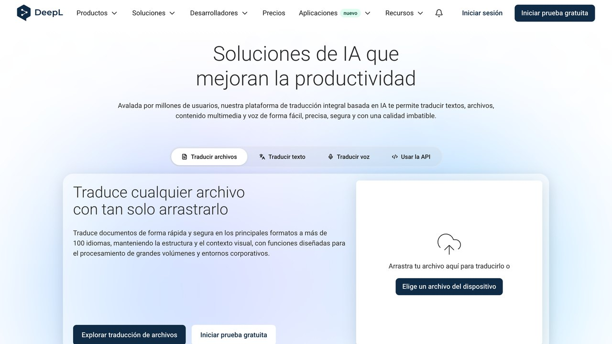
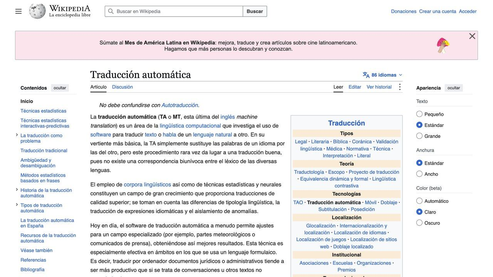

1. DeepL: rápido y natural, con menos control
DeepL está especializado únicamente en traducción, y para los idiomas europeos que mejor cubre suele producir un resultado más natural con menos esfuerzo que pedírselo a un chat general — pegas el texto, eliges el idioma de destino, y listo. La contrapartida es que no puedes pedirle explicaciones: no sabes por qué eligió una expresión concreta, ni puedes pedirle que ajuste el tono o el registro sin reescribir tú el resultado a mano.
2. Un chat de IA: más lento, pero puedes preguntarle por qué
La ventaja real de pedirle una traducción a ChatGPT, Claude o Gemini no es la calidad base — es que puedes seguir conversando sobre la traducción: pedirle que explique una expresión ambigua, que la adapte a un registro más formal o más cercano, o que señale qué partes no tienen equivalente exacto en el idioma de destino. Es la diferencia entre una traducción como producto final y una traducción como punto de partida para revisar con criterio.
Traduce el siguiente texto de [idioma origen] a [idioma destino], con un registro [formal / neutro / cercano]. Después de la traducción: 1. Señala cualquier expresión, modismo o juego de palabras del original que no tenga equivalente exacto, y explica brevemente qué decisión tomaste en su lugar. 2. Si hay alguna frase ambigua que podría interpretarse de más de una forma, indícalo. 3. Dame una alternativa de traducción para la frase que consideres más difícil del texto. Texto: [pega aquí el texto]
«Una traducción automática suena natural casi siempre — y eso es precisamente lo peligroso: suena bien incluso cuando ha cambiado el sentido.
— Redacción El Telar
3. Tres tipos de texto donde ninguna IA debería decidir sola
Documentos legales o contractuales
Un error de matiz en una cláusula puede cambiar una obligación entera. Ni DeepL ni un chat de IA garantizan precisión jurídica — están entrenados para sonar naturales, no para preservar significado legal exacto.
Textos médicos
Dosis, síntomas o instrucciones de tratamiento traducidos mal pueden tener consecuencias graves — trátalo siempre como borrador para que revise un profesional, nunca como versión final.
Humor y juegos de palabras
Un chiste basado en el sonido o la estructura del idioma casi nunca sobrevive a una traducción literal. Una IA puede proponer un chiste equivalente, pero eso ya es reescribir, no traducir — conviene saber cuál de las dos cosas necesitas antes de pedirla.
4. Cómo comprobar una traducción sin hablar el idioma de destino
Si no dominas el idioma al que has traducido, la comprobación más fiable no es "leerla y ver si suena bien" — no tienes forma de juzgar eso. La técnica que sí funciona es la retrotraducción: pide a la misma IA, en una conversación nueva y sin contexto previo, que traduzca el resultado de vuelta a tu idioma original. Si el significado vuelve razonablemente intacto, la traducción es sólida; si aparecen cambios de sentido, has encontrado justo la frase que merece revisión humana antes de usarla.
5. Un email profesional, traducido bien y mal
La diferencia entre una traducción literal y una que funciona de verdad se nota más en el registro que en el vocabulario. Un ejemplo con una frase española habitual en un correo de trabajo:
"Cuando puedas, échale un ojo" → "When you can, throw an eye at it" — gramaticalmente reconocible, pero suena extraño y poco profesional en inglés.
La misma frase, pidiendo "registro profesional" al chat → "Whenever you get a chance, could you take a look?" — mismo mensaje, tono correcto para un entorno de trabajo.
Esa es la razón por la que especificar el registro en el prompt (formal, neutro, cercano) no es un detalle menor — cambia el resultado más que elegir entre DeepL y un chat de IA.

6. Traducir un documento entero sin romper el formato
Pegar un Word de veinte páginas en un chat tiene dos problemas: pierdes el formato (tablas, negritas, numeración) y, en documentos largos, el modelo tiende a resumir o saltarse párrafos sin avisar. Es uno de los fallos más difíciles de detectar, porque el resultado se lee bien: simplemente le faltan trozos.
Para documentos, lo más cómodo es la función de traducir archivos que ofrecen DeepL y Google Translate: subes el .docx o el .pdf y te devuelven el mismo archivo con la maquetación casi intacta. Si prefieres un chat porque necesitas controlar el tono, trabaja por bloques de dos o tres páginas y pide al final de cada bloque que confirme cuántos párrafos ha traducido.
Compara la longitud
Una traducción al inglés suele ocupar algo menos que el español, y al alemán algo más, pero nunca la mitad. Si un bloque vuelve mucho más corto que el original, falta texto.
Revisa números y fechas
Cifras, importes, porcentajes y fechas son lo que más cuesta ver cuando cambia. Comprueba que coinciden uno a uno con el original: en inglés, además, el punto y la coma decimales van al revés.
Cuidado con los PDF escaneados
Si el PDF es una foto del papel, primero hay que reconocer el texto (OCR). Los errores del OCR, como una cifra mal leída, pasan a la traducción sin que nadie los marque.
7. Un glosario para que no cambie de palabra a mitad del texto
En un manual, una web o un contrato, el mismo término tiene que traducirse igual en todas partes. Si en la página 2 "cliente" es customer y en la página 9 es client, el lector duda de si hablan de lo mismo. Los traductores automáticos no garantizan esa coherencia entre bloques, porque cada fragmento se traduce casi por separado.
La solución profesional se llama glosario: una lista corta de términos con su traducción obligatoria. DeepL permite guardar glosarios en algunos de sus planes; en un chat basta con ponerlo al principio de cada petición.
Vas a traducir un documento de [idioma origen] a [idioma destino] en varios bloques. Usa SIEMPRE estas traducciones, sin variar: - [término 1] → [traducción 1] - [término 2] → [traducción 2] - [nombre de producto o marca] → no se traduce Reglas: 1. Mantén el formato: títulos, listas y negritas. 2. No resumas ni omitas nada. Al final dime cuántos párrafos has traducido. 3. Si aparece un término técnico que no está en la lista, tradúcelo y añádelo a una lista de "términos nuevos" al final para que yo lo revise. Bloque 1: [pega aquí el texto]
8. Traducir no es localizar: webs, tiendas y marketing
Una web o un anuncio no se traducen, se adaptan. Una traducción perfecta de una página de producto española puede fallar en México o en Estados Unidos por cosas que no son de idioma: la moneda, el formato de fecha, las tallas, una referencia cultural que allí no se entiende o un tono demasiado formal para ese mercado.
Aquí un chat de IA sí aporta más que un traductor, porque puedes pedirle que actúe como alguien de ese país y que te señale lo que chirría. No sustituye a un nativo que revise el texto final, pero te llega mucho más pulido.
Actúa como redactor nativo de [país] especializado en [sector]. Adapta este texto de mi web para ese mercado, no lo traduzcas literalmente: - Moneda, fechas, unidades y tallas en el formato local. - Cambia expresiones o referencias que allí no se entiendan. - Tono: [cercano / profesional], como escribiría una marca local. Después, haz una lista de cada cambio que no sea una simple traducción y explica por qué lo has hecho. Texto: [pega aquí el texto]
9. Cuando necesitas una traducción oficial, la IA no vale
Para presentar un título, un certificado de nacimiento o unos antecedentes penales ante una administración española, normalmente te pedirán una traducción jurada. En España solo la pueden firmar los traductores-intérpretes jurados nombrados por el Ministerio de Asuntos Exteriores, que publica la lista oficial en su web. Una traducción hecha con IA, por buena que sea, no tiene validez para ese trámite.
Donde sí te ahorra dinero la IA es antes: entender qué dice el documento, comprobar que es el que te piden y preparar una lista de dudas. Y después: revisar que la traducción jurada no tiene errores en nombres, fechas o números de documento, que son los fallos que más problemas dan en ventanilla.
10. Qué no deberías pegar en un traductor gratuito
Todo lo que pegas en un traductor o en un chat viaja a los servidores de la empresa. En las versiones gratuitas, las condiciones de uso suelen permitir guardar ese texto y, en algunos casos, usarlo para mejorar el servicio. Algunos planes de pago y de empresa se comprometen a no conservarlo, pero hay que leer las condiciones de cada uno, porque cambian.
Datos personales de terceros
Nóminas, historiales médicos, DNI o direcciones de clientes. Sustitúyelos por [NOMBRE], [DNI] o [DIRECCIÓN] antes de traducir y vuelve a ponerlos después.
Documentos confidenciales de tu empresa
Contratos en negociación, cifras sin publicar o código propio. Consulta primero si tu empresa tiene una herramienta aprobada.
Si no hay alternativa
Un modelo instalado en tu propio ordenador traduce sin enviar nada fuera. Lo explicamos en la guía de IA local.
11. El flujo que usamos, en cinco pasos
- Decide qué tipo de texto es. Informativo y largo: traductor. Con tono o matices: chat. Legal, médico u oficial: borrador para un profesional.
- Prepara el terreno. Quita datos personales y escribe el glosario si el texto tiene términos fijos.
- Traduce por bloques. Pide siempre el registro (formal, neutro, cercano) y que no resuma.
- Comprueba. Retrotraducción de las frases clave, números uno a uno y longitud de cada bloque.
- Revisión humana según el riesgo. Un email interno no la necesita; una web que va a leer un cliente, sí; un contrato, siempre.
KISS Translator: traduce webs y vídeos en bilingüe
KISS Translator es una extensión de navegador gratuita y de código abierto (GPL-3.0) que muestra la traducción junto al texto original, en lugar de sustituirlo. Es ideal para leer en otro idioma sin perder matices y, de paso, aprender vocabulario.
Qué hace
- Traducción bilingüe de páginas web, de cuadros de texto y al seleccionar o pasar el ratón.
- Subtítulos bilingües en YouTube, con estilos personalizables y resumen del vídeo con IA.
- Traducción de archivos TXT, Markdown, PDF, EPUB e imágenes.
- Muchos servicios a elegir: Google, Microsoft, DeepL, y modelos como OpenAI, Gemini, Claude, DeepSeek u Ollama.
- Modelos locales que, una vez descargados, funcionan en tu dispositivo.
Cómo empezar
- Instálala desde la tienda de extensiones de Chrome, Edge o Firefox (los enlaces están en el repositorio).
- Elige el idioma de destino (español) y un servicio de traducción.
- Si quieres usar un modelo de IA de pago, añade tu clave en los ajustes.
- Abre una web en otro idioma y activa la traducción.
Lo honesto: la documentación principal está en chino, aunque hay versión en inglés. Las funciones nuevas solo están en las extensiones de Chrome, Edge y Firefox. Los servicios de IA en la nube se pagan con tu clave.
Repositorio: github.com/fishjar/kiss-translator